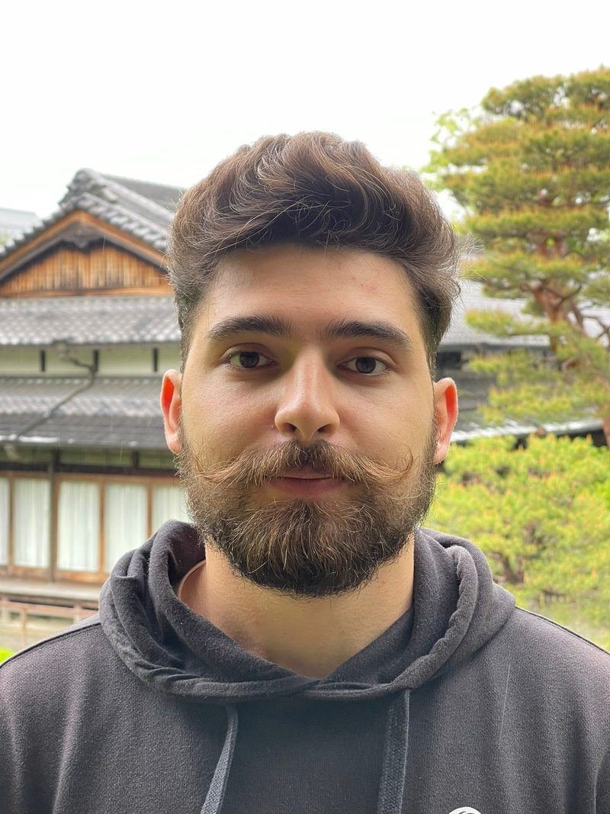

I'm Tony — a private guide based in Osaka. I came to Japan drawn by its culture, its food, and its people — and I never left.
What I offer is not a packaged tour. It is access to the Japan I know personally — the backstreet izakayas not on Google Maps, the temple at 6am before the crowds arrive, the market vendor who becomes your favourite memory.
I speak English, Spanish and Arabic fluently, and I adapt to any pace or interest — whether you want to eat everything, photograph every corner, or simply walk and let the city breathe around you.
Every tour is 100% private and shaped around your group, pace, and interests.
Food markets, ancient temples, neon streets and hidden alleys — the full spectrum of urban Japan.
ExploreKōyasan pilgrimages, mountain shrines and forest paths few tourists ever reach.
ExploreTony, Johnny and Larion — three guides covering EN, ES, AR, RU, CS and JP.
Meet GuidesAll prices are per group — not per person. Includes a private guide for the full duration.
"Tony showed us an Osaka that doesn't exist in any guidebook. Three days later we are still talking about the ramen spot at 7am in Shinsekai."
"We had a toddler and Tony adapted every single minute of the day. Kyoto felt magical, not exhausting. Worth every yen."
"Тони говорит по-русски и знает Кансай как свой карман. Лучший способ увидеть Японию — это с ним."
No — all tours are 100% private. You will never share your guide with strangers.
2–4 weeks ahead is ideal. Last-minute requests are welcome — just message Tony on WhatsApp.
Free cancellation up to 48 hours before the tour. No questions asked.
All travel is by train or on foot — no private car. Japan's rail network is fast, comfortable, and part of the experience.
Pick a date, choose your route — WhatsApp message sent automatically
The fastest way to book. Tony typically replies within a few hours. Choose your language: